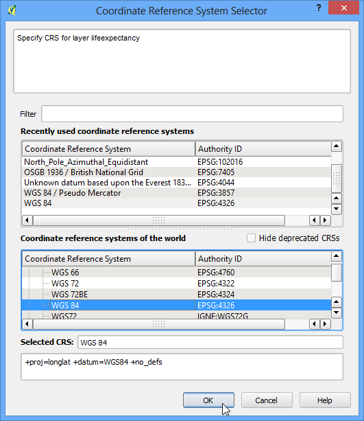
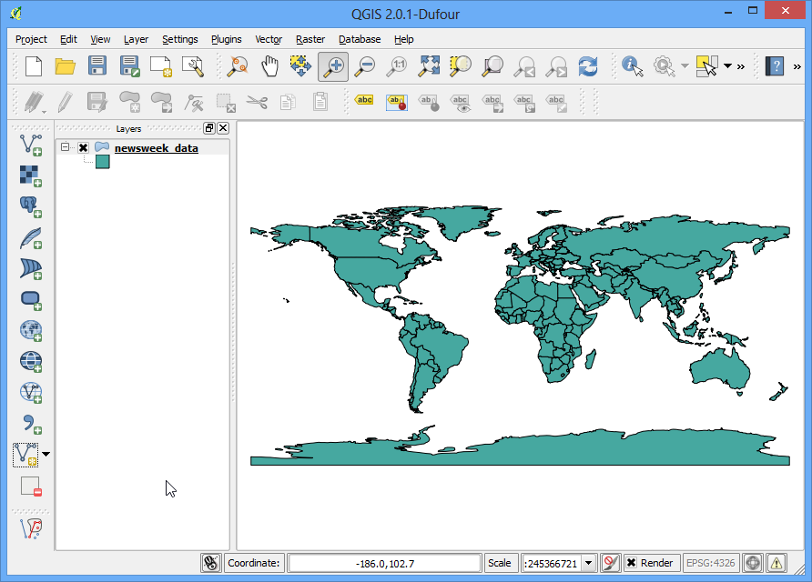
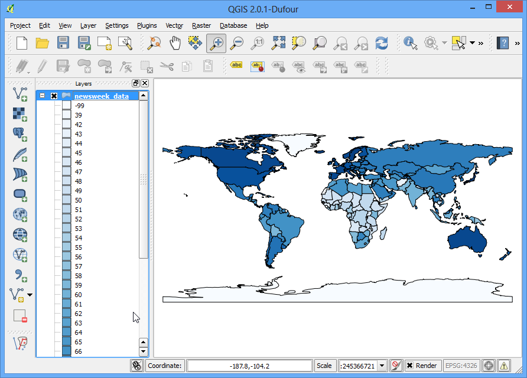
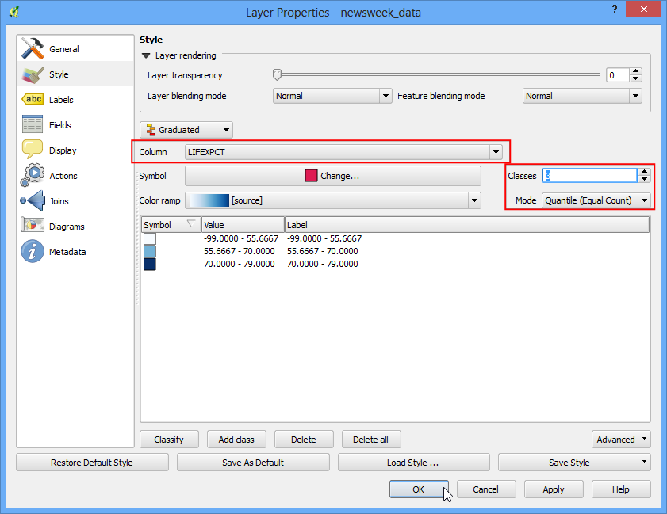
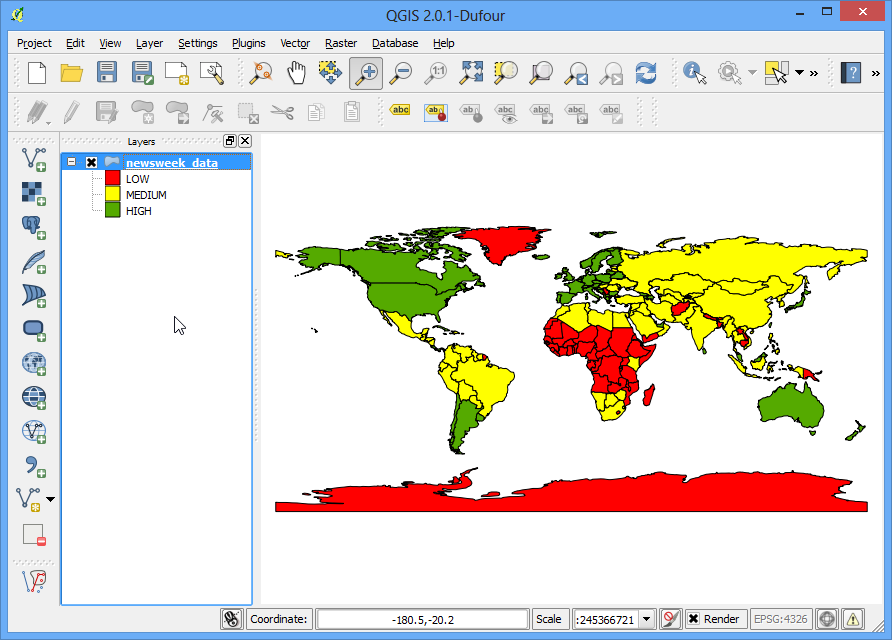

基本向量資料樣式設定
為了讓地圖能夠清楚呈現資訊，GIS 資料的樣式必須要好好設定。在 QGIS 中，有許多選項可以讓使用者以不同的風格與符號呈現原始資料。在本教學中，我們就來看一些基本的樣式設定技巧。
內容說明
設定「世界各國的人口預期壽命」向量圖層的樣式。
操作流程
打開 QGIS，選擇 。

找到剛下載的 lifeexpectancy.zip 後，按下 開啟。內含的 shapefile 叫做 newsweek_data.shp。接下來要為資料選一個座標參考系統 (CRS)，這邊選 WGS84 EPSG:4326 當作 CRS 即可。

這樣一來在壓縮檔內的 shapefile 就可以呈現在畫面上，目前它使用的是預設的樣式設定。

在這個圖層上按右鍵，選擇 開啟屬性表格，

看一下這筆資料有哪些屬性。在眾多的屬性欄位中，只能挑一個做為地圖呈現，考慮到我們的目標是要秀出人口預期壽命（life expectancy，指平均來說這個國家的人可以活到多老）的差異，要看的欄位很自然的就是 LIFEXPECT。

關掉屬性表格，然後在這個圖層上按右鍵，選擇 屬性。’

許多樣式調整的選項都放在屬性視窗的 樣式 分頁中。按一下分頁上的那個下拉選單，可以看到有許多選項可以使用，像是 單一符號、類別、漸層、規則、點位移 等等。這裡我們只會用前三個選項來示範樣式設定。

選擇 單一符號，這個選項是針對所有圖層裡的圖徵統一調整樣式。由於我們的資料屬於多邊形的結構，所以有兩個樣式基本部位可以調，一個就是 如何填滿，另一個則是 多邊形的外框。這裡我們先選看看 dotted 的填滿圖樣，然後按下 確定。

這下子圖層中所有的多邊形都會被選擇的新樣式給填滿。

很顯然的，「單一符號」並不適合呈現預期壽命的資料，我們試試看別種吧。再次按右鍵進到這個圖層的 屬性，然後在 樣式 分頁中選擇「 類別」的選項。這個選項會把具有不同屬性值的圖徵，用不同深淺的顏色來顯現。在「行」的那個地方選擇 :guilabel:`LIFEXPECT，然後在 色彩映射表 中選擇一個你喜歡的色條，接著按下 分類 按鈕，最後按下 確定。

結果是，不同的國家被套上了深淺不一的藍色。圖中淺色代表較低的預期壽命，深色則代表較高的預期壽命。這種方法有用多了，例如說我們可以得知預期壽命在開發中國家和已開發國家的差異，這就是我們想要的樣式設定。

接下來來看看 樣式 分頁中的「 漸層」選項。漸層樣式設定可以把資料依照某個屬性分成許多的 類別，每個類別可以有不同的樣式設定。假設我們想把資料分成三個類別：低、中、高，那麼可以在 行 的地方填上 LIFEXPECT，然後在 類別 的地方選擇 3。你會看到有很多不同的 模式 可以選擇，來稍微了解一下好了：這裡總共有 5 種模式，分別為 等距、分位數、自然間斷法臨界值法(Jenks)、標準差 和 Pretty 間斷法。不同的模式使用不同的統計演算法來把資料分到不同類別中。
等距：如其名，每個類別都具有相等的數值範圍。如果資料是從 0-100 然後被分成 10 個類別，那麼每個類別的數值範圍就是 0-10，10-20，20-30 等等，每個類別的大小都是 10 單位。
分位數：每個類別都具有相等的資料個數。如果資料有 100 筆然後被分成 4 個類別，那麼每個類別會有 25 筆資料。
自然間斷法臨界值法(Jenks)：此演算法會尋找最自然的數值群組來建立類別。同一類別中的資料集合具有最小化的標準差，而不同類別的資料集合則具有最大化的標準差。
標準差：計算資料的平均值與標準差，然後以平均值加減標準差的倍數來做分類。
Pretty 間斷法：這是基於 R 語言中的 Pretty 演算法發展而來。真要說起來有點複雜，不過基本上會叫做 Pretty 的原因，是它的分類結果會把類別邊界放在捨位過的數字上。
在這裡我們先選簡單的「分位數」法。按下後 分類 以後應該就可以看到有 3 個類別出現，也可以看到類別的邊界值。最後按下 確定。
註解
漸層 選項要求進行分析的欄位一定得是數值資料。欄位屬性是整數或是浮點數都可以，不過如果是字串的話，是沒辦法使用這個選項的。

接著一張具有 3 個顏色的地圖就出現了，上面標註著人口預期壽命的國家區塊。

在圖層上按下右鍵選擇 屬性 後回到 樣式 選單，這裡還有一些東西可以調。每個類別的符號點下去後都可以進行各自的設定。這裡我們預計使用紅、黃、綠來代表低、中、高的人口預期壽命。

在 符號選擇 視窗中，按下 色彩 的選單，

然後在 選取色彩 的視窗中挑選顏色。

回到 圖層屬性 視窗，在 圖例 那邊點兩下，就可以輸入你想要的圖例標籤；而在 值 那邊點兩下，就可以修改類別的邊界範圍。修改完成後就可以按下 確定。

這次的版本比起前兩次嘗試更為實用，因為它使用清晰的顏色，顯示了我們對於人口預期壽命差異的解讀。
